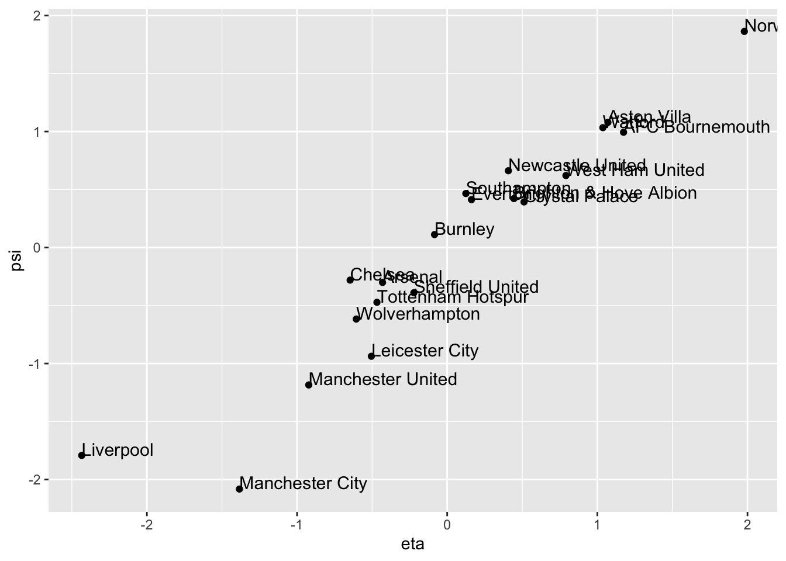

5.2 The full set of canonical correlations
Let us first recap what we did in the previous section: we found a linear combination of the \(\mathbf x\)-variables and a linear combination of the \(\mathbf y\)-variables which maximised the correlation, and expressed the answer in terms of quantities which arise in the SVD of \(\mathbf Q\), where \[ \mathbf Q\equiv \mathbf S_{\mathbf x\mathbf x}^{-1/2} \mathbf S_{\mathbf x\mathbf y}\mathbf S_{\mathbf y\mathbf y}^{-1/2}=\mathbf U{\pmb \Sigma} \mathbf V^\top=\sum_{j=1}^t \sigma_j \mathbf u_j \mathbf v_j^\top. \]
We found the maximum value of the correlation \({\mathbb{C}\operatorname{or}}(\mathbf a^\top\mathbf x, \mathbf b^\top\mathbf y)\) to be \(\sigma_1\), achieved using the linear combinations \(\eta_1=\mathbf a_1^\top \mathbf x\) and \(\psi_1=\mathbf b_1^\top \mathbf y\) with
\[\mathbf a_1=\mathbf S_{\mathbf x\mathbf x}^{-1/2}\mathbf u_1 \quad\mbox{ and } \mathbf b_1=\mathbf S_{\mathbf y\mathbf y}^{-1/2}\mathbf v_1.\]
We now repeat this process to find the next most important linear combination, subject to being uncorrelated with the first linear combination, as we did with PCA. For \(\mathbf a^\top \mathbf x\) to be uncorrelated with \(\eta_1 = \mathbf a_1^\top \mathbf x\) we require \[0 = {\mathbb{C}\operatorname{ov}}(\mathbf a_1^\top \mathbf x, \mathbf a^\top \mathbf x) = \mathbf a_1^\top \mathbf S_{xx}\mathbf a,\] and similarly we require the condition \(\mathbf b_1^\top \mathbf S_{yy} \mathbf b=0\) for \(\mathbf b\).
Thus, to obtain the second canonical correlation coefficient, plus the associated sets of canonical correlation vectors and variables, we need to solve the following optimisation problem: \[\begin{equation} \max_{\mathbf a,\, \mathbf b} \mathbf a^\top \mathbf S_{\mathbf x\mathbf y}\mathbf b \tag{5.9} \end{equation}\] subject to the constraints \[\begin{equation} \mathbf a^\top \mathbf S_{\mathbf x\mathbf x}\mathbf a= \mathbf b^\top \mathbf S_{\mathbf y\mathbf y}\mathbf b=1, \tag{5.10} \end{equation}\] \[\begin{equation} \mathbf a_1^\top \mathbf S_{\mathbf x\mathbf x} \mathbf a= \mathbf b_1^\top \mathbf S_{\mathbf y\mathbf y}\mathbf b=0. \tag{5.11} \end{equation}\] Note that maximising (5.9) subject to (5.10) and (5.11)is very similar to the optimisation problem (5.4) considered in the previous section. What is new are the constraints (5.11), which take into account that we have already found the first canonical correlation.
It will probably not surprise you to find that the solution is \[\mathbf a^\top \mathbf S_{xy}\mathbf b= \sigma_2\quad\mbox{ achieved at} \quad \mathbf a=\mathbf a_2 := S_{xx}^{-1/2}\mathbf u_2 \mbox{ and } \mathbf b=\mathbf b_2 := S_{yy}^{-1/2}\mathbf v_2\] where \(\sigma_2\) is the second largest singular value of \(\mathbf Q\), and \(\mathbf u_2\) and \(\mathbf v_2\) are the corresponding left and right singular vectors.
Main results
We now state the result in its full generality.
Proposition 5.2 For \(k=1, \ldots, r = \operatorname{rank}(\mathbf S_{xy})\), the solution to sequence of optimization problems \[\begin{align} \mbox{Maximize} \quad &\mathbf a^\top \mathbf S_{xy}\mathbf b\\ \mbox{subject to } \;\;&\mathbf a^\top \mathbf S_{xx}\mathbf a=\mathbf b^\top\mathbf S_{yy} \mathbf b=1\\ \mbox{ and }\;\;\;&\mathbf a_i^\top \mathbf S_{xx}\mathbf a=\mathbf b_i^\top \mathbf S_{yy}\mathbf b= 0 \mbox{ for }i=1, \ldots, k-1 \end{align}\] is achieved at \(\mathbf a_k = \mathbf S_{xx}^{-1/2}\mathbf u_k\) and \(\mathbf b_k=\mathbf S_{yy}^{-1/2}\mathbf v_k\) with \(\mathbf a_k \mathbf S_{xy}\mathbf b_k = \sigma_k\).
Note that an equivalent way of writing down the problem is as
\[\begin{align*}
\mbox{Maximize } \quad \operatorname{tr}(\mathbf A^\top \mathbf S_{xy}\mathbf B) &= \sum_{i=1}^k \mathbf a_i^\top \mathbf S_{xy}\mathbf b_i\\
\mbox{ subject to} \quad \mathbf A^\top \mathbf S_{xx}\mathbf A&=\mathbf I\\
\mbox{ and }\quad \mathbf B^\top \mathbf S_{yy}\mathbf B&= \mathbf I
\end{align*}\]
which is in the form of the general problem given in Equation (4.1) if \[\mathbf A= \begin{pmatrix}\mathbf a_1&\ldots &\mathbf a_k\end{pmatrix}, \quad \mathbf B= \begin{pmatrix}\mathbf b_1&\ldots &\mathbf b_k\end{pmatrix}\]
are matrices containing the canonical correlation vectors as columns.
Before we prove this result, we first give an extension of Proposition 3.9.
Proposition 5.3 Let \(\mathbf Q\) be an arbitrary matrix with SVD \(\mathbf Q= \sum_{i=1}^r \sigma_i \mathbf u_i \mathbf v^\top_i\). For \(k=1, \ldots, r\) the solution to the optimization problem \[\begin{align} \mbox{Maximize}\quad &\mathbf a^\top \mathbf Q\mathbf b\\ \mbox{subject to} \quad &\mathbf a^\top \mathbf a= \mathbf b^\top \mathbf b=1\\ &\mathbf a_i^\top\mathbf a= \mathbf b_i^\top\mathbf b= 0 \mbox{ for } i = 1, \ldots, k-1 \end{align}\] is achieved at \[\mathbf a_k=\mathbf u_k, \qquad \mathbf b_k = \mathbf v_k\] with \[\mathbf a_k^\top \mathbf Q\mathbf b_k = \sigma_k.\]
Proof. We will work through the proof of this proposition in the Exercises.
Proof. Proof of Proposition 5.2. We note as before that if we write \(\tilde{\mathbf a}_j =\mathbf S_{\mathbf x\mathbf x}^{1/2} \mathbf a_j\) and \(\tilde{\mathbf b}_j=\mathbf S_{\mathbf y\mathbf y}^{1/2} \mathbf b_j\), then the constraints become \[\tilde{\mathbf a}^\top \tilde{\mathbf a}=\tilde{\mathbf b}^\top\tilde{ \mathbf b}=1 \;\mbox{ and }\;\tilde{\mathbf a}_i^\top \tilde{\mathbf a}=\tilde{\mathbf b}_i^\top \tilde{\mathbf b} = 0 \mbox{ for }i=1, \ldots, k. \] Consequently, we may view constraints (5.11) as corresponding to orthogonality constraints (cf. PCA) in modified coordinate systems.
The objective \(\mathbf a^\top \mathbf S_{xy}\mathbf b\) becomes \(\tilde{\mathbf a}^\top \mathbf Q\tilde{\mathbf b}\) with \[\mathbf Q= \mathbf S_{xx}^{-1/2} \mathbf S_{xy}\mathbf S_{yy}^{-1/2}.\] Thus applying Proposition 5.3 gives the desired result.
To summarize:
The \(k^{th}\) canonical correlation is \(\sigma_k\), the \(k^{th}\) largest singular value of \(\mathbf Q\).
The \(k^{th}\) canonical correlation vectors (sometimes called the weights for the \(\mathbf x\) and \(\mathbf y\) variables) are \[\mathbf a_k = \mathbf S_{xx}^{-1/2} \mathbf u_k, \qquad \mathbf b_k = \mathbf S_{yy}^{-1/2} \mathbf v_k\]
The \(k^{th}\) canonical correlation variables (or canonical correlation scores) are \[\eta_{ik} = \mathbf a_k^\top (\mathbf x_i-\bar{\mathbf x}), \qquad \psi_{ik} = \mathbf b_k^\top (\mathbf y_i-\bar{\mathbf y}).\]
We define the CC variable/score vectors to be \[{\pmb \eta}_k=(\eta_{1k}, \ldots , \eta_{nk})^\top \mbox{ and }{\pmb \psi}_{k}=(\psi_{1k}, \ldots , \psi_{nk})^\top.\]
5.2.1 Example continued
From (5.8), it is seen that the 2nd CC coefficient is given by \(\sigma_2=0.705\). So the correlation between the second pair of CC variables is smaller than the 1st CC coefficient, though still appreciably different from \(0\). We now calculate the 2nd CC weight vectors:
\[ \mathbf a_2=\mathbf S_{\mathbf x\mathbf x}^{-1/2} \mathbf q_2 = \begin{pmatrix}0.0313 \\0.329 \\\end{pmatrix} \qquad \text{and} \qquad \mathbf b_2=\mathbf S_{\mathbf y\mathbf y}^{-1/2}\mathbf r_2=\begin{pmatrix}-0.07 \\-0.104 \\\end{pmatrix}, \] with new variables \[ \eta_2 =0.0313 (W-\bar{W}) +0.329(D -\bar{D}) \] and \[ \psi_2 = -0.07(G-\bar{G}) -0.104(GA-\bar{GA}). \] Note that, to a good approximation, \(\eta_2\) is measuring something similar to the number of draws and, approximately, \(\psi_2\) is something related to the negative of total number of goals in a team’s games. So large \(\psi_2\) means relatively few goals in a team’s games, and small (i.e. large negative) \(\psi_2\) means a relatively large number of goals in a team’s games.
Interpretation of the 2nd CC: teams that have a lot of draws tend to be in low-scoring games and/or teams that have few draws tend to be in high-scoring games.
eta2 = prem.cca$scores$xscores[,2]
psi2= prem.cca$scores$yscores[,2]
cca.out <- data.frame(Team=table$Team, eta2=eta2, psi2=psi2)
library(ggplot2)
ggplot(cca.out, aes(x= eta2, y= psi2, label=Team))+ geom_point() +
geom_text(aes(label=Team),hjust=0, vjust=0, size=4)